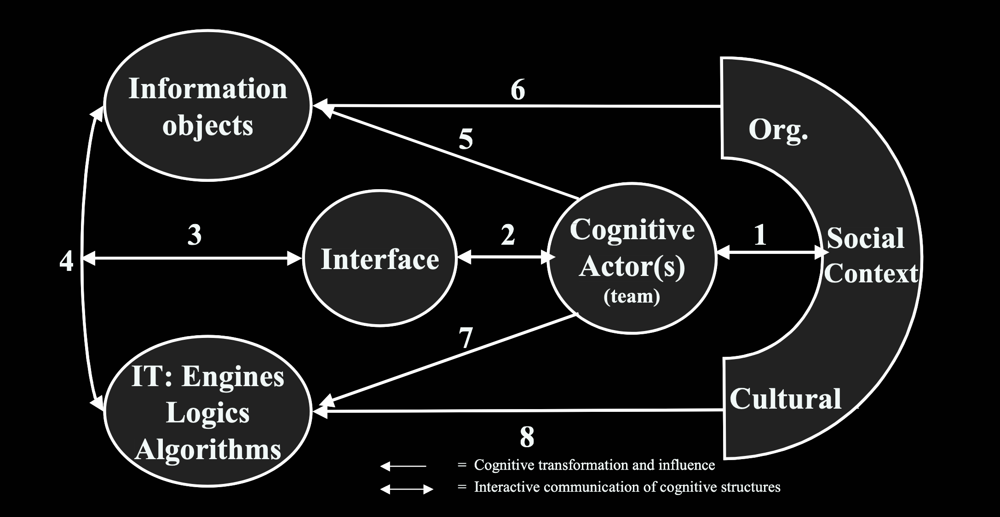
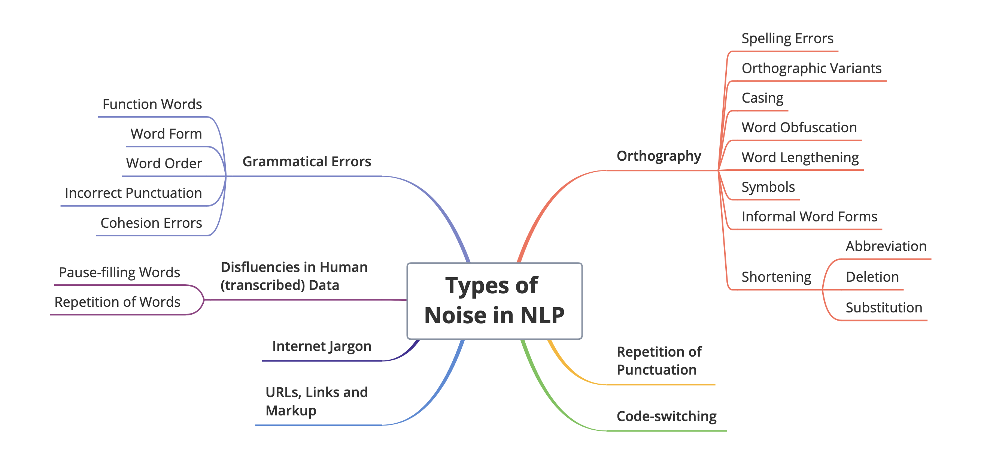

PhD Program in Information Science
image source: https://knowledge.exlibrisgroup.com/Primo/Product_Documentation/020Primo_VE/Primo_VE_(English)/015_Getting_Started_with_Primo_Research_Assistant
Abstract metadata from https://api.crossref.org/works/10.1103/physrevd.110.036015
Or, another example from https://api.crossref.org/works/10.33024/hjk.v15i1.3791:
Or one that contains geometric shapes, from https://api.crossref.org/works/10.1108/eemcs-04-2022-0108
Inversen & Järvelin’s Cognitive Model of Information Seeking and Retrieval

From Ingwersen & Järvelin (2005)
Yasser et al., (2011)
Noise classification from Wu et al., (2025)
| Quality Classification | Source |
|---|---|
| Semantic noise | Wu et al., 2025 |
| Datatype noise | Wu et al., 2025 |
| Incorrect values | Yasser et al., 2011 |
| Incorrect elements | Yasser et al., 2011 |
| Missing information | Yasser et al., 2011 |
| Information loss | Yasser et al., 2011 |
| Inconsistent value representation | Yasser et al., 2011 |
Knowns
Unknowns
To identify errors and noise in title and abstract content,
compare metadata sources for error and noise,
and observe the effect on RAG.
def cohere_rag_pipeline(directory_path,search_queries,top_k,threshold):
# retrieve documents from directory
documents = read_documents_with_doi(directory_path)
print(f"Length of documents: {len(documents)}")
# randomize order of documents
random.shuffle(documents) # this was added for december run - it seemed to have a big impact on precision, recall, etc.
# embed the documents
documents_embedded = document_embed(documents)
#embed the query:
query_embedded = query_embed(search_queries)
# retrieve the top_k documents
retrieved_documents = retrieve_top_k(top_k, query_embedded, documents_embedded, documents)
# rerank the documents using the Rerank model from Cohere
reranked_documents, reranked_DOIs_with_score = rerank_documents(retrieved_documents,search_queries,threshold,top_k)
# set system instructions
instructions = """
You are an academic research assistant.
You must include the DOI in your response.
If there is no content provided, ask for a different question.
Please structure your response like this:
Summary: summary statement here.
DOI: summary of the text associated with this DOI.
Address me as, 'my lady'.
"""
# create messages to model
messages = [{"role":"user",
"content": search_queries[0]},
{"role":"system",
"content":instructions}]
# Generate the response NOTE: change the model for the test condition!
resp = co.chat(
model="command-a-03-2025",
messages=messages,
documents=reranked_documents,
)
return resp, reranked_documents, reranked_DOIs_with_score
RQ1. What errors or noise may be observed in the title and abstract from a random Crossref sample?
How do Crossref and OpenAlex compare for errors and noise in the same random sample?
What is the effect of observed errors and noise on RAG retrieval and generation?
Statistically significant: (p=0.00006, 0.95 CI)
Statistically significant: (p=0.01, 0.95 CI)

Thank you to everyone that has helped and supported me over the years.
My family, my supervisor and committee, fellow students, organizations, and the Department of Information Science.
Funding support was received from the Nova Scotia Graduate Scholarship, Dalhousie IDPhD and Department of Information Science Programs, Mitacs, and Cohere Labs Catalyst Grant Program.
Poppy Riddle Department of Information Science PhD Program
Agarwal, S., Laradji, I. H., Charlin, L., & Pal, C. (2024). LitLLM: A Toolkit for Scientific Literature Review (No. arXiv:2402.01788). arXiv. https://doi.org/10.48550/arXiv.2402.01788
Alonso-Álvarez, P., & van Eck, N. J. (2024, October 29). Coverage and metadata availability of African publications in OpenAlex: A comparative analysis. Zenodo. https://doi.org/10.5281/zenodo.14006425
Al Sharou, K., Li, Z., & Specia, L. (2021). Towards a Better Understanding of Noise in Natural Language Processing. In R. Mitkov & G. Angelova (Eds.), Proceedings of the International Conference on Recent Advances in Natural Language Processing (RANLP 2021) (pp. 53–62). INCOMA Ltd. https://aclanthology.org/2021.ranlp-1.7/
Cho, S., Jeong, S., Seo, J., Hwang, T., & Park, J. C. (2024). Typos that Broke the RAG’s Back: Genetic Attack on RAG Pipeline by Simulating Documents in the Wild via Low-level Perturbations (No. arXiv:2404.13948). arXiv. https://doi.org/10.48550/arXiv.2404.13948
Culbert, J., Hobert, A., Jahn, N., Haupka, N., Schmidt, M., Donner, P., & Mayr, P. (2024). Reference Coverage Analysis of OpenAlex compared to Web of Science and Scopus (No. arXiv:2401.16359). arXiv. https://doi.org/10.48550/arXiv.2401.16359
Delgado-Quirós, L., & Ortega, J. L. (2024). Completeness degree of publication metadata in eight free-access scholarly databases. Quantitative Science Studies, 5(1), 31–49. https://doi.org/10.1162/qss_a_00286
Hayashi, T., Sakaji, H., Dai, J., & Goebel, R. (2024). Metadata-based Data Exploration with Retrieval-Augmented Generation for Large Language Models (No. arXiv:2410.04231). arXiv. https://doi.org/10.48550/arXiv.2410.04231
Ingwersen, P., & Järvelin, K. (2005). The Turn Integration of Information Seeking and Retrieval in Context (1st ed. 2005). Springer Netherlands : Imprint : Springer.
Kang, S.-H., & Kim, S.-J. (2023). M-RAG: Enhancing Open-domain Question Answering with Metadata Retrieval-Augmented Generation. 한국정보통신학회논문지, 27(12), 1489–1500. https://doi.org/10.6109/jkiice.2023.27.12.1489
Saiyed, Z., Orian, C., Riddle, P., Prashanth Kanagaraj, G., Krause, G., Toupin, R., & Brooks, S. (2025). RAG Based Navigation of the World Ocean Assessment II. Proceedings of the 21st Conference on Natural Language Processing (KONVENS 2025): Workshops, 282–290. https://aclanthology.org/2025.konvens-2.22.pdf
Shi, F., Chen, X., Misra, K., Scales, N., Dohan, D., Chi, E. H., Schärli, N., & Zhou, D. (2023). Large Language Models Can Be Easily Distracted by Irrelevant Context. Proceedings of the 40th International Conference on Machine Learning, 31210–31227. https://proceedings.mlr.press/v202/shi23a.html
Yasser, C. M. (2011). An Analysis of Problems in Metadata Records. Journal of Library Metadata, 11(2), 51–62. https://doi.org/10.1080/19386389.2011.570654
{kind=link}
{kind=link}
{kind=link}
{kind=link}
{kind=link}
{kind=link}
{kind=link}
{kind=link}
{kind=link}
{kind=link}
{kind=link}
{kind=link}
{kind=link}
{kind=link}
{kind=link}
{kind=link}
{kind=link}
{kind=link}
{kind=link}